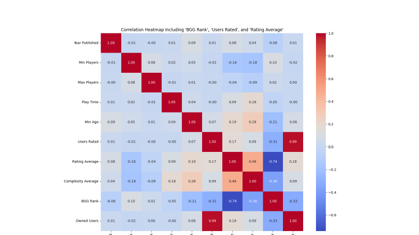

Selected GitHub Projects
Research, modeling, and software projects with the strongest technical depth
U.S. Climate Variability
Reproducible analysis of NOAA records using harmonic regression, Fourier methods, wavelets, and change-point detection.
Board Game Consumer Research
Research on how ratings, complexity, play time, and other gameplay variables relate to sales and consumer response.
M3 Challenge Model
Urban heat, power demand, and community-vulnerability modeling for the 2025 MathWorks Math Modeling Challenge.
HiMCM Mathematical Model
An international mathematical-modeling paper that earned Honorable Mention in the HiMCM competition.
Mosaic Me
A fork of Jonathan Tiedchen's project that I extended with perceptual Lab color matching, light image preprocessing, improved Streamlit session handling, and consolidated download tracking.
Airfoil Analysis and Redesign
Multivariable-calculus and numerical analysis of airfoil geometry, velocity, pressure, and lift.
Mosaic Me attribution: based on Jonathan Tiedchen's original project; see my extended fork for the changes.
Research
Selected papers and presentations
Detection of Temporal Variability in U.S. Climate Using Harmonic and Wavelet Decomposition
Independent Climate Research Collaboration · 2025
Author: Thomas XiaoHarmonic regression, Fourier analysis, wavelet decomposition, and change-point detection applied to NOAA records from 1895–2024.Analysis of Factors Influencing Board Game Ownership Based on a Gradient Boosting Model
CONF-APMM · 2025
Thomas Xiao with Dr. Cosimo ArnesanoRegression and boosting analysis of BoardGameGeek data, ratings, complexity, play time, and consumer response.Project Highlights
Visuals from the work that best represents my interests

Climate Variability Research
Frequency-aware analysis of long-run U.S. climate records.

Board Game Consumer Research
Regression and boosting analysis of gameplay and consumer-response data.

M3 Challenge Model
Urban heat, power demand, and vulnerability modeling.

Mosaic Me
My fork adds perceptual color matching and a sturdier Streamlit workflow to Jonathan Tiedchen's original project.
Desmos Animations + FFmpeg
An FFmpeg workflow for extracting, trimming, retiming, and recombining video frames rendered as Bézier curves in Desmos.

Airfoil Analysis and Redesign
Numerical and multivariable-calculus analysis of airfoil geometry, pressure, velocity, and lift.